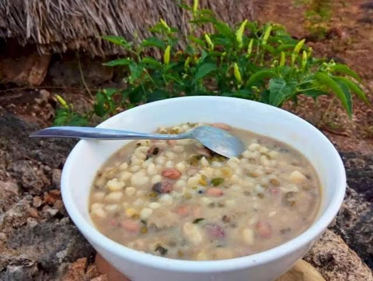

📖 Tentang Katalog Kuliner UMKM
Katalog UMKM Kuliner Kupang merupakan wadah informasi digital yang menyajikan berbagai produk kuliner khas Nusa Tenggara Timur, khususnya dari Kota Kupang dan sekitarnya. Katalog ini bertujuan untuk memperkenalkan cita rasa lokal kepada masyarakat luas sekaligus mendukung pertumbuhan UMKM daerah.
Setiap produk dalam katalog ini dikurasi berdasarkan keaslian resep, bahan lokal, dan nilai budaya yang terkandung di dalamnya. Dari makanan pokok tradisional hingga oleh-oleh khas, semuanya tersedia dalam satu platform.
UMKM Terdaftar
25+ pelaku usaha kuliner lokal
Produk Kuliner
7 kategori produk unggulan
Lokasi
Kota Kupang & sekitarnya
Bahan Lokal
100% bahan alami NTT
🍽️ Kategori Produk Kuliner
Katalog ini terbagi menjadi tiga kategori utama yang mewakili kekayaan kuliner NTT:
🍲 Kuliner Tradisional
- Jagung Bose : makanan pokok dari jagung, kacang merah & labu
- Se'i Sapi : daging sapi asap khas Timor
- Kue Rambut : kue tradisional renyah dari tepung beras
🥤 Minuman Khas
- Sopi : minuman tradisional fermentasi nira lontar
- Es Lemon NTT : minuman segar dari lemon lokal & gula aren
🎁 Oleh-oleh
- Tenun Ikat : kain tenun motif khas dengan filosofi
- Kopi Timor : kopi arabika khas dengan aroma kuat
- Keripik Pisang :
⭐ Produk Unggulan
Berikut adalah daftar produk kuliner unggulan yang tersedia di katalog UMKM Kuliner Kupang:
| No | Produk | Kategori | Harga |
|---|---|---|---|
| 1 | 🌽 Jagung Bose | Kuliner Tradisional | Rp 15.000 |
| 2 | 🥩 Se'i Sapi | Kuliner Tradisional | Rp 50.000 |
| 3 | 🍰 Kue Rambut | Kuliner Tradisional | Rp 20.000 |
| 4 | 🍶 Sopi | Minuman Khas | Rp 35.000 |
| 5 | 🍋 Es Lemon NTT | Minuman Khas | Rp 10.000 |
| 6 | 🧵 Tenun Ikat | Oleh-oleh | Rp 250.000 |
| 7 | ☕ Kopi Timor | Oleh-oleh | Rp 45.000 |
🏪 Profil UMKM Mitra
Beberapa UMKM kuliner yang menjadi mitra dalam katalog ini:
🍲 Dapur Mama NTT
Spesialis Jagung Bose & Se'i Sapi dengan resep turun-temurun dari Timor.
Sejak 2015🍰 Kue Rambut Bu Ratna
Produsen kue rambut tradisional dengan cita rasa autentik Kupang.
Sejak 2010🧵 Tenun Ikat Timor
Pengrajin tenun ikat dengan motif khas dan pewarna alami.
Sejak 2008☕ Kopi Timor Arabika
Petani kopi lokal penghasil arabika kualitas ekspor dari Timor.
Sejak 2012🎧 Media Pendukung
Dengarkan dan tonton dokumentasi seputar UMKM kuliner Kupang:

Makanan pokok dari jagung, kacang tanah & dan kacang hijau
🎯 Visi & Misi
Visi
Menjadi katalog digital kuliner NTT terdepan yang mendukung pertumbuhan UMKM lokal dan melestarikan cita rasa tradisional.
Misi
- Menyediakan informasi lengkap dan akurat tentang produk kuliner NTT
- Mendukung pemasaran digital UMKM kuliner Kupang
- Melestarikan resep dan tradisi kuliner lokal
- Menghubungkan produsen lokal dengan pasar yang lebih luas